Цилиндры
Для создания камер двигателя применяются установленные соосно цилиндры (роторы). Для удобства описания я буду называть их "внешний цилиндр (ротор)" и "внутренний цилиндр (ротор)" - по способу установки валов относительно друг друга. Цилиндры имеют полые валы. Лопасти установленные в цилиндрах одного цилиндра упираются торцами в стенки второго цилиндра. Таким образом образуются замкнутые камеры внутри соединенных цилиндров. Как показано на каритнках цилиндры соединяются с перекрытием ("в нахлест"). Большая площадь контакта позволяет надежно изолировать камеры и не допускать прорыва газов.
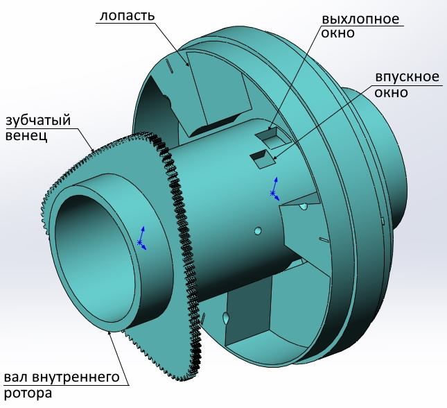
В самих цилиндрах нет подвижных деталей. Они совершают только вращательные движения друг относительно друга.
Передача
Основой зубчатой передачи является зубчатый вал со смещенными шестернями. Так как по виду он сильно напоминает обычный коленвал - буду называть его зубчатым коленвалом (ЗКВ).
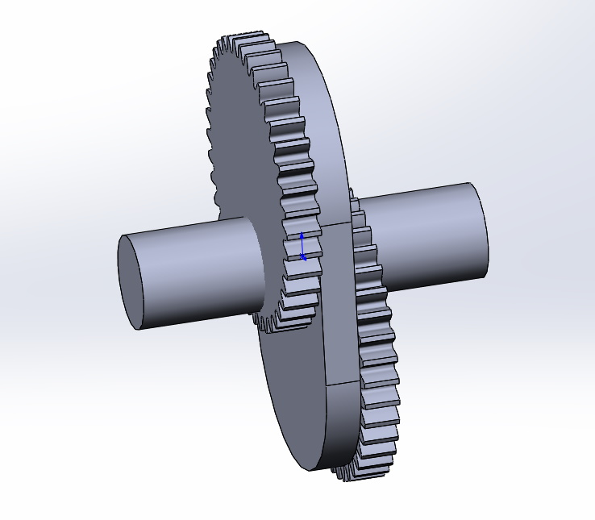
На полых валах цилиндров установлены зубчатые венцы. Форма этих венцов может быть различной. В данном примере - венцы треугольные так как одни полный оборот цилиндр совершает за три оборота ЗКВ. Но они могут иметь любую n-угольную форму. Всего три подвижных детали (2 цилиндра и ЗКВ) устанавливаются в корпус. Цилиндры своими зубчатыми венцами входят в зацепление с валом (ЗКВ).

В приведенном примере цилиндр совершающий малый ход проворачивается на 30 градусов, а совершающий большой ход на 90. Таким образом относительный ход лопастей (разница большого и малого хода цилиндров) составляет 60 градусов за один оборот ЗКВ и средние скорости лопастей совершающих малый и большой ход находится в соотношении 1:2.
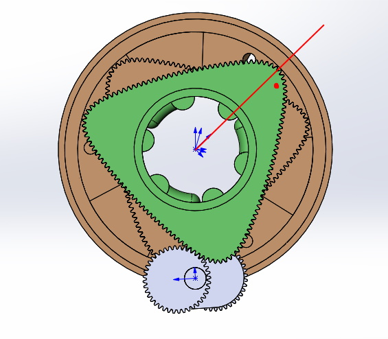
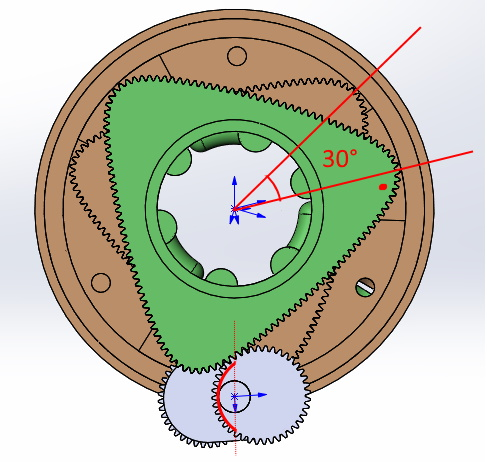
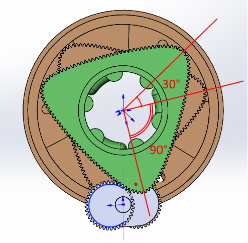
Газораспределение и цикл
Валы цилидров сделаны полыми. Через валы подается горючая смесь и отводится выхлоп. С этой целью в них выполенны окна для подачи горючей смеси и для выхлопа. В процессе работы окна совмещеаются или перекрываются телом соседнего вала. Получается скользящий клапан. Относительное смещение окон внутреннего и внешнего роторов позволяет создать механизм газораспределения. Схема газораспределения такая же как и в обычном двухтактном двигателе. Только в качестве картера в котором поршень зжимает горючую смесь при движении вниз выступает часть камер (половина камер) образованных лопастями и цилиндрами.
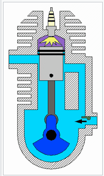
взято тут
Таким образом в половине камер всегда происходит сгорание (горячие камеры), а в другой половине камер (холодные камеры) - всегда всасывание и зжатие горючей смеси для её прокачки в горячие камеры. Цикл двигателя выглядит следующим образом (представим что двигатель уже запущен и работает):
1. В горячих камерах произошло воспламенение горючей смеси и начинается рабочий ход. В холодных камерах завершилось всасывание новой порции горючей смеси. Выхлопной канал в горячих камерах закрыт, а впускной канал в холодных камерах открыт.
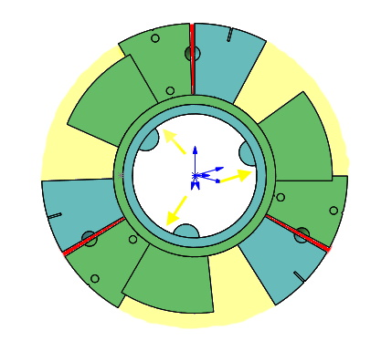
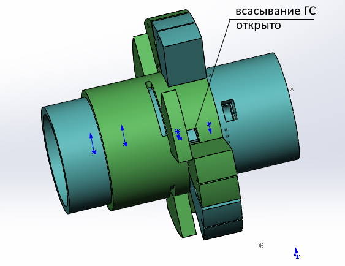
2. Двигатель совершает рабочий ход и относительное положение цилиндров меняется. В холодных камерах закрывается впускной канал и начинается зжатие горючей смеси (как в картере поршнвого двухтактного двигателя). Далее достигается положение цилиндров при котором открывается выхлопной канал.
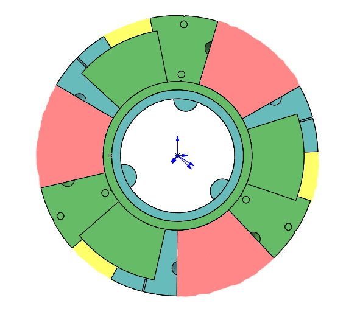
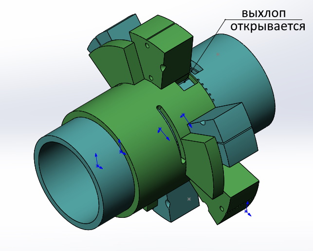
3. К моменту перед открытием перекиндного канала выхлоп в горячих камерах уже произошел. Выхлопной канал полностью открыт и давление в горячих камерах близкое к атмосферному. В холодных камерах сжата горючая смесь.
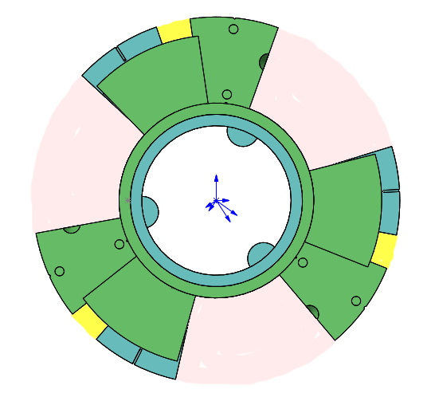
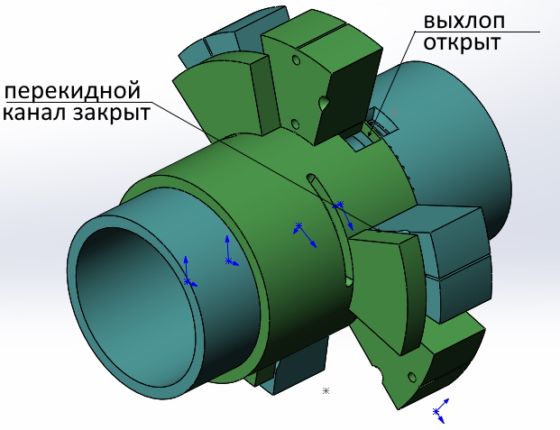
4. Далее открывается перекидной канал и сжатая горючая смесь из холодных камер через перекидной канал вытесняется в горячие камеры. Роторы достигают положения равных угловых скоростей и с этого момента опорный и ведущий роторы меняются ролями.
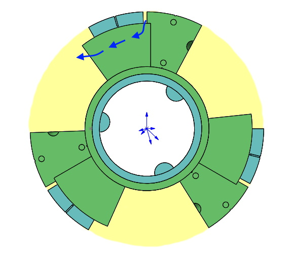
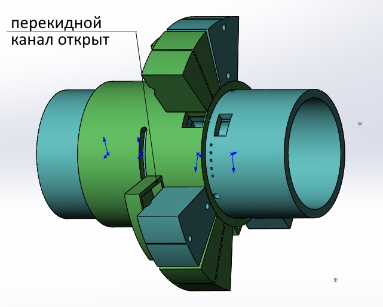
5. При сближении лопастей горячих камер сначала закрывается перекидной канал и начинает закрываться выхлопной канал. В холодных камерах после закрытия перекидного канала начинает нарастать разрежение.
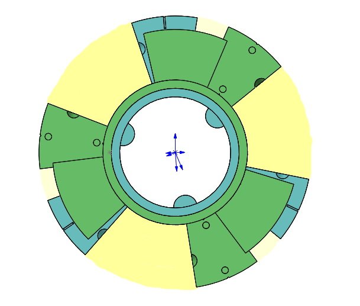
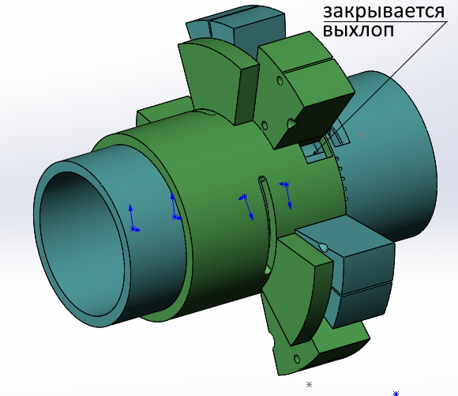
6. После полного закрытия выхлопного канала и горячие и холодные камеры становятся герметичными. При дальнейшем вращении роторов в горячих камерах происходит сжатие горючей смеси, а в холодных камерах нарастает разрежение.
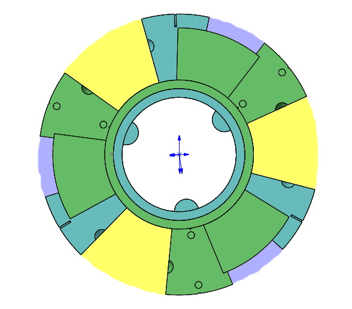
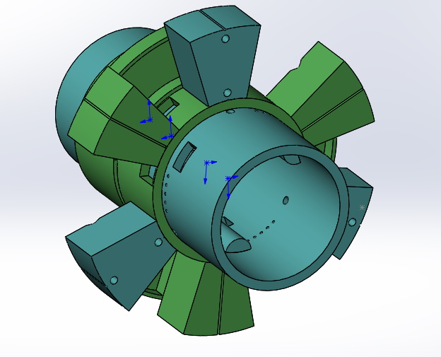
7. Роторы достигают положения при котором открывается канал подачи горючей смеси. За счет разрежения холодные камеры заполняются новой порцией горючей смеси. В горячих камерах продолжается сжатие.
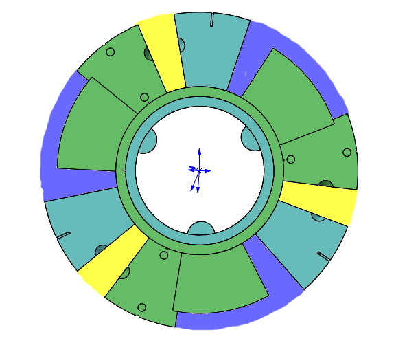
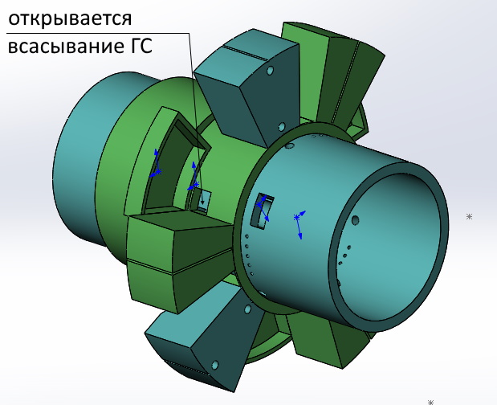
8. Роторы достигают положения описанного в п.1. В горячих камерах происходит зажигание и цикл повторяется.
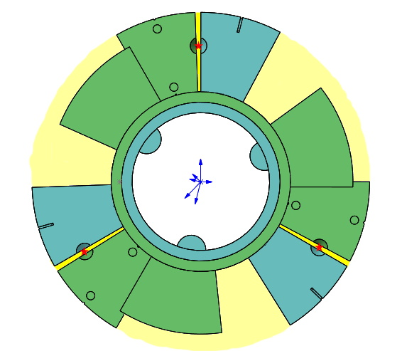
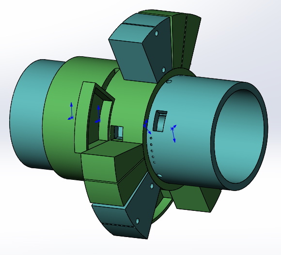
Анимация показывает в динамике цикл двигателя и работу механизма газораспределения (открытие/закрытие выхолопных и впускных окон)


Направленный выхлоп
Так как оба ротора вращаются в одном направление целесообразно направить выхлоп в противоположном направлении. Это позволяет использовать часть энергии выхлопа без применения дополнительных устройств (используя только статичные патрубки). Выхлоп - это газ с температурой около 800 С° и давлением около 10 атм. Вполне подходящий для использования ресурс. Газ из горячих камер через выхолопные окна и выхлопной канал попадает на выхлопные патрубки направленные против вращения роторов. На выхлопных патрубках создается реактивная тяга и выхлоп тем самым совершает дополнительную работу.
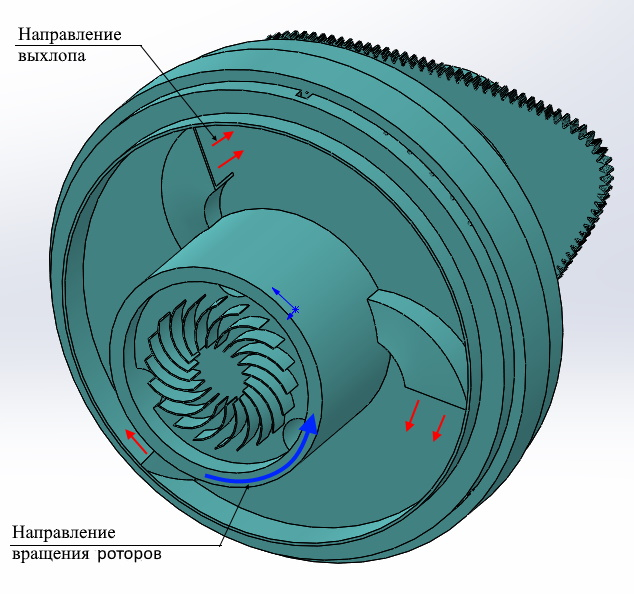
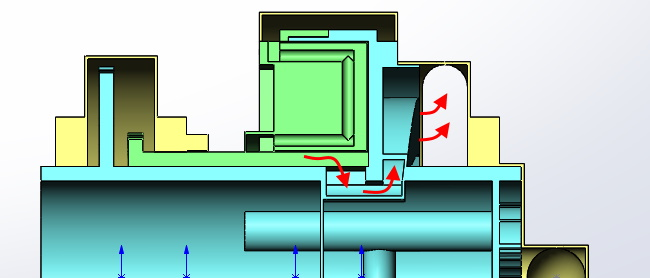
Охлаждение и смазка
Оба ротора постоянно вращаются. Если выполнить в них каналы и подвести к ним жидкость через полые валы - то жидкость будет прокачиваться через детали роторов под действием центробежного ускорения (так же как в центробежном насосе). И для охлаждения и для смазки деталей можно использовать машинное масло. Ниже на картинках стрелками показано направление протока жидкости.
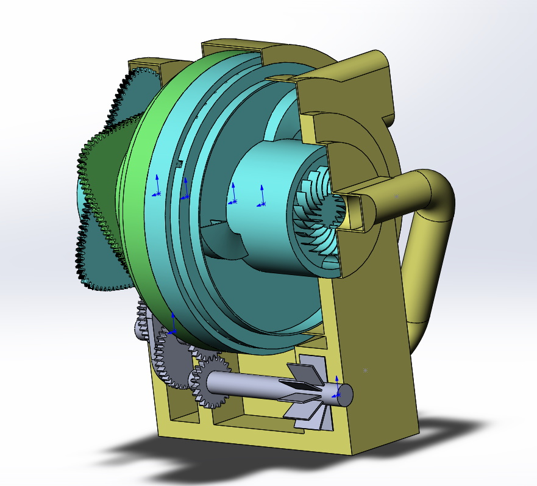
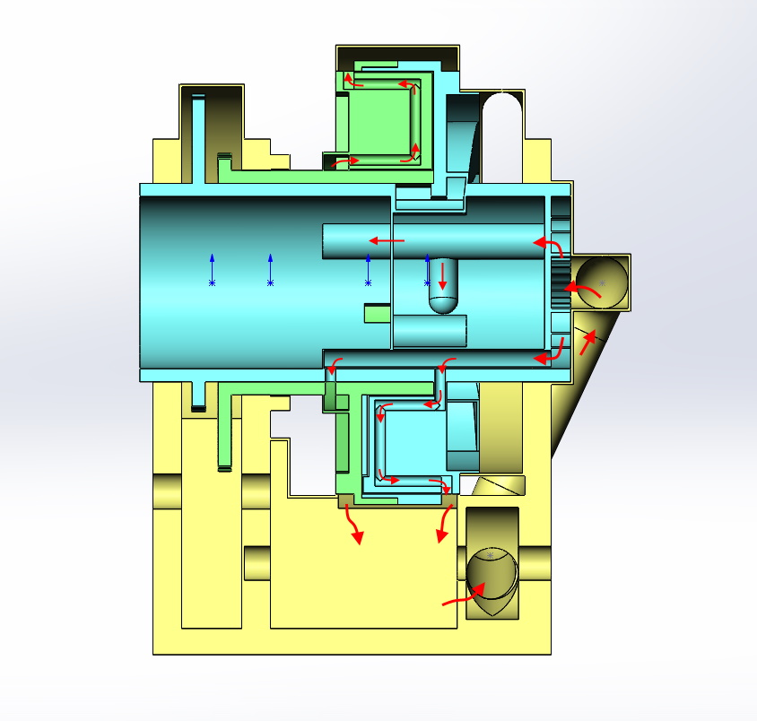
Каналы охлаждения возможно выполнить в боковых стенках камер.
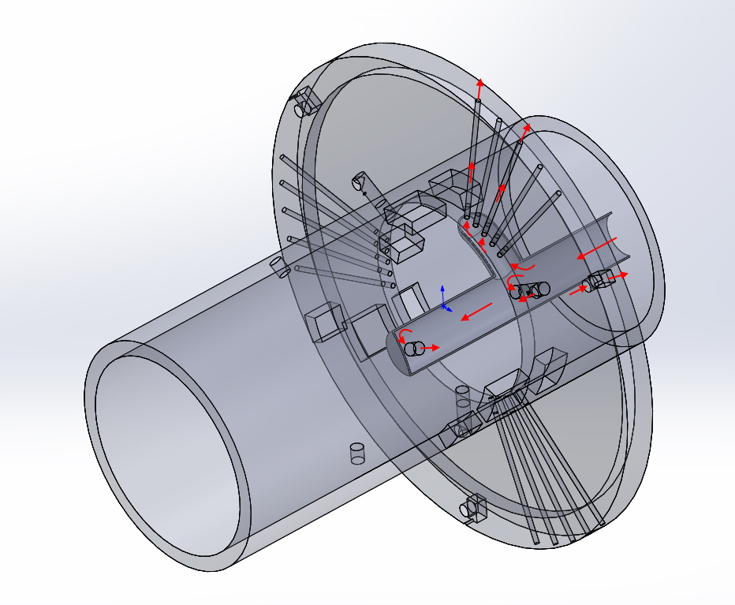
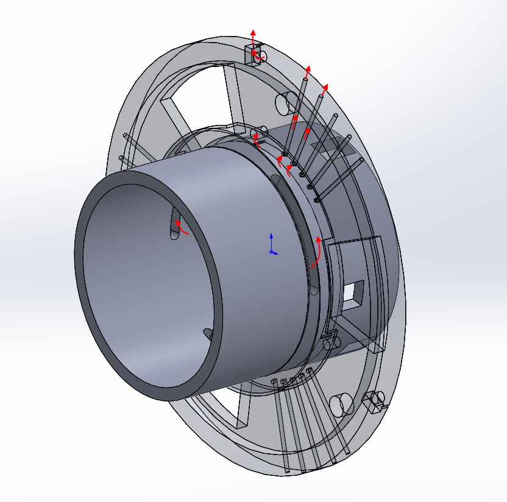
В лопастях так же возможно сделать каналы охлаждения.
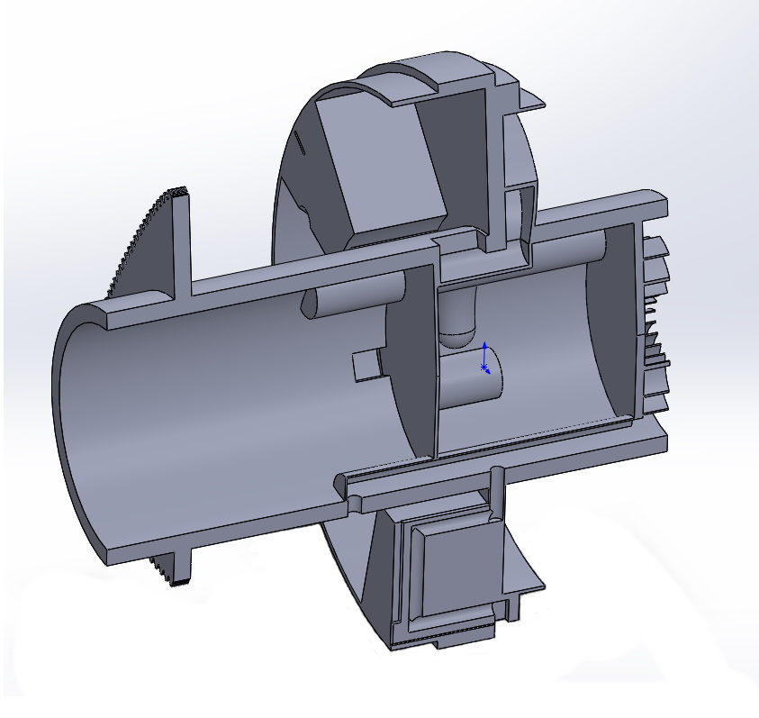
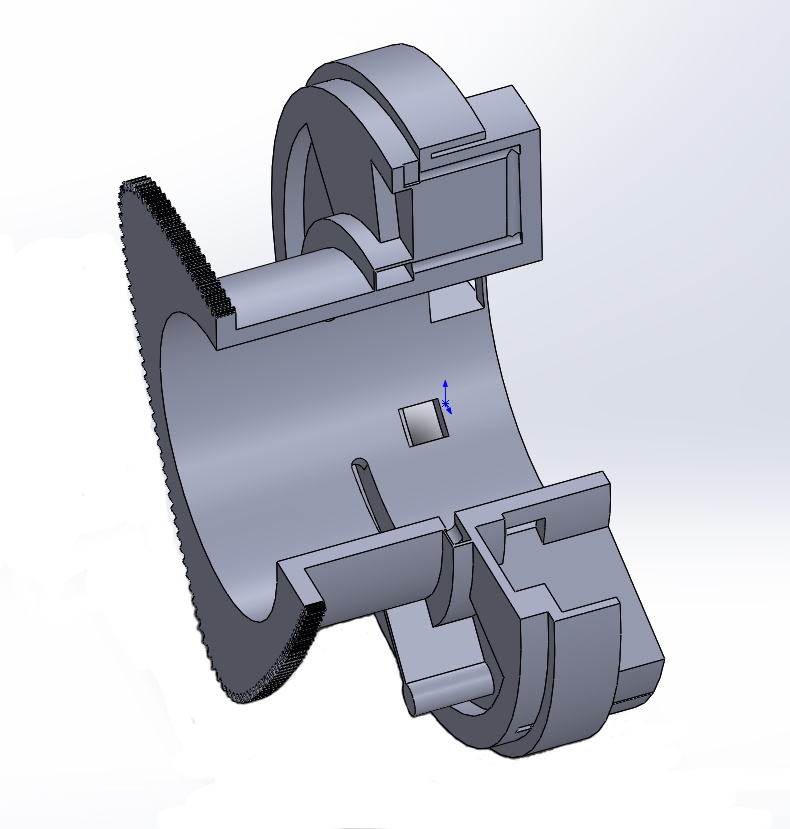
Жидкость проходя по каналам улавливается внешним кожухом и возвращается к гидронасосу подающему её снова в каналы внутреннего ротора (проходя при необходимости через радиатор и маслофильтр - не показаны на схемах). Так происходит циркуляция охладителя. Таким образом все части двигателя возможно интенсивно охлаждать. Центробежное охлаждение позволяет поднять температуру в камерах сгорания. В обычных ДВС перегрев может приводить к прогоранию поршней. Охладить же поршни достаточно сложно. В двухроторной конструкции лопасти возможно охлаждать не допуская прогорания. При прочих равных условиях чем выше перепад температур между рабочим телом и окружающей средой - тем выше КПД тепловой машины. Кроме того, наличие каналов уменьшает сухой вес двигателя. Смазку возможно выполнить деалая дополнительные ответвления от охлаждающих каналов к трущимся поверхностям. Тут каналы смазки не показаны, что бы не усложнять описание. Однако из схем видно, что все контактирующие поверхности достижимы для смазки. Это позволит отказаться от добавления масла в бензин (как это делается для смазки двухтактных поршневых ДВС). Сгорание будет чище. На внешних поверхностях лопастей возможно выполнить внешние каналы (не описано в патенте). При соединении цилиндров канал лопасти одного цилиндра закрывается снаружи внутренней стенкой другого цилиндра. Образуются "трубки" (внешняя станка "трубки" - подвижная) по которым может течь жидкость омывая внутренние стенки обоих цилиндров (внешний канал лопастей внутреннего цилиндра прерывается обходя зону перекидного канала). Это позволяет и смазывать и охлаждать поверхности цилиндров непосредственно соприкасающиеся с продуктами горения. При этом жидкость не будет забрасываться в камеры так как благодарая ценробежному ускорению будет сбрасываться через каналы во внешний кожух.
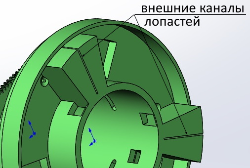
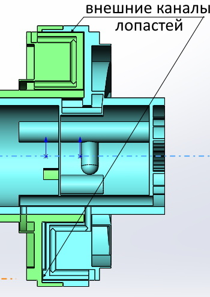
Зажигание
Для поджига грючей смеси на внешнем роторе установлены свечи зажигания. Запитать свечи можно как контактным, так и бесконтактным способом. Поэтому в патенте подробно не рассматривается вопрос питания свечей. Тут представлен вариант бесконтактного питания. На рисунке слева показано (условно) только место размещения катушек зажигания. Схеме справа он не соответсвует.
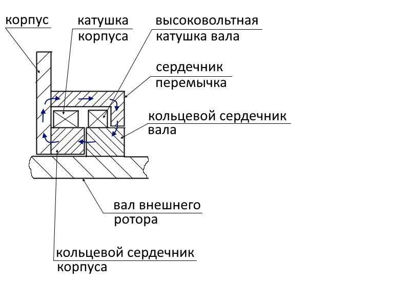
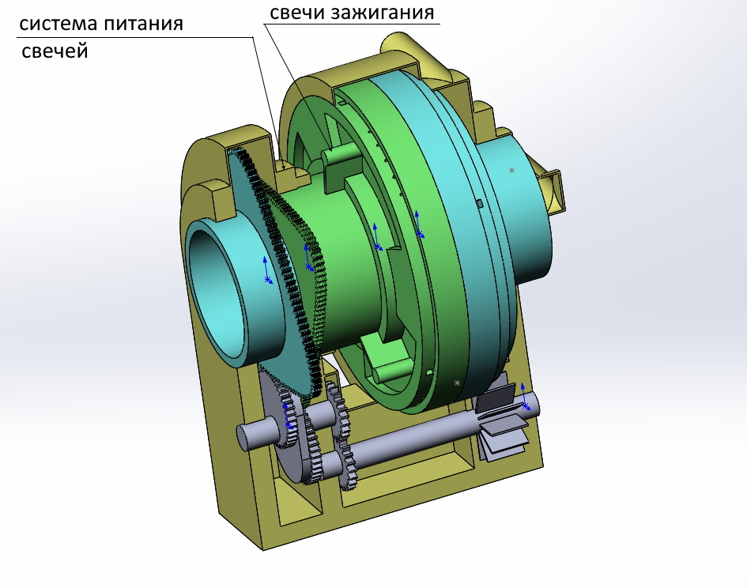
На корпусе расположен кольцевой сердечник на который намотана катушка (стационарная). На внешнем валу так же расположен средечник с намотанной на него высоковольтной катушкой. Она вращается вместе с внешним валом. Для замыкания магниного потока установлен сердечник перемычка. По сути получается обычный трансформатор, передающий энергию на высоковольтную катушку без электрических контактов. Стрелками показано замыкание магнитного потока. Зазоры в магнитной системе возможно выполнить минимальными так как элементы магнитной системы не несут высокой механической нагрузки. Далее от высоковольтной катушки к свечам зажигания питание подется по проводу проложенному по ротору внешнего вала. Момент зажигания может определяться внешним блоком управления (не рассматривается тут).
Заключение
На первый взгляд двухроторная конструкция - это просто обычный двухтактный двигатель "свернутый в кольцо". Но особенности конструкции придают ему свойства не достижимые для поршневого варианта:
- - направленный выхлоп позволяет использовать часть энергии выхлопа для повышения полезной работы двигателя без дополнительных утройств
- - центробежное охлаждение позволяет интенсивно охлаждать все части двигателя включая лопасти (охлаждать поршни в обычном ДВС сложно). Это позволяет сжигать больше топлива в единицу времени (что то калорийнее бензина, горючие смеси с большей температурой горения). Т.е. позволяет повышать мощьность и "оборотистость" двигателя.
- - все части можно хорошо смазывать. Нет необходимости добавлять масло в бензин (как это сейчас делается для двухтактных ДВС). Сгорание будет чище.
- - большинство контактов деталей - концентрические. При подведении смазки они будут работать как подшипники скольжения имея минимальные потери на трение.
- - Все усилия и колебания возникающие при ускорениях роторов "замкнуты" по кругу. Это снижает вибрации позволяя делать высокооборотистые двигатели.